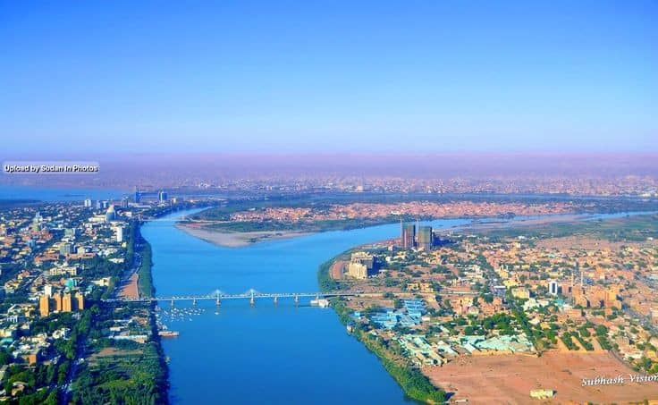
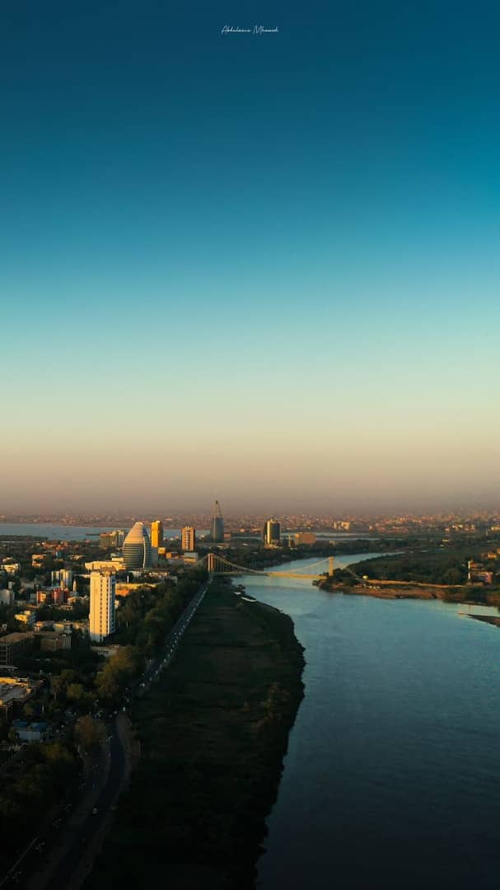
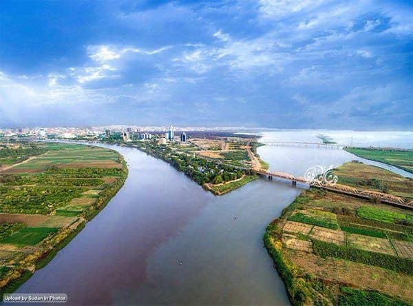

Tourism
Jebel Marra is one of Sudan's most prominent tourist destinations,
attracting both local and international visitors seeking breathtaking natural beauty.
The mountain offers a variety of activities, including mountain climbing,
exploring waterfalls and volcanic lakes,
as well as safari trips to discover its unique landscapes.
Jebel Marra is one of Sudan's most prominent tourist destinations,
attracting both local and international visitors seeking breathtaking natural beauty.
The mountain offers a variety of activities, including mountain climbing,
exploring waterfalls and volcanic lakes,
as well as safari trips to discover its unique landscapes.
Location
Jebel Marra is located in the Darfur region in western Sudan,
spanning a vast area that covers parts of Central and West Darfur states.
With an elevation of 3,042 meters above sea level, it is one of the highest peaks in Sudan.
Jebel Marra is located in the Darfur region in western Sudan,
spanning a vast area that covers parts of Central and West Darfur states.
With an elevation of 3,042 meters above sea level, it is one of the highest peaks in Sudan.
Historical and Natural Significance
Jebel Marra is characterized by a moderate climate that becomes cooler at higher altitudes,
setting it apart from Sudan's prevailing desert climate.
The area is home to famous waterfalls like "Gulu Waterfall" and volcanic lakes that add to its distinct charm,
along with dense forests and rare plants.
The mountain also holds cultural significance for the local population and serves
as an economic pillar with fertile soils supporting the cultivation of coffee, fruits, and vegetables.
Jebel Marra is characterized by a moderate climate that becomes cooler at higher altitudes,
setting it apart from Sudan's prevailing desert climate.
The area is home to famous waterfalls like "Gulu Waterfall" and volcanic lakes that add to its distinct charm,
along with dense forests and rare plants.
The mountain also holds cultural significance for the local population and serves
as an economic pillar with fertile soils supporting the cultivation of coffee, fruits, and vegetables.
Visitor Tips
Wear comfortable clothing and suitable shoes for mountain climbing.
Bring photography equipment to capture the stunning scenery.
Consult local guides to explore the mountain's key attractions.
Plan your visit during milder seasons to enjoy favorable weather conditions.
Wear comfortable clothing and suitable shoes for mountain climbing.
Bring photography equipment to capture the stunning scenery.
Consult local guides to explore the mountain's key attractions.
Plan your visit during milder seasons to enjoy favorable weather conditions.
Take a Look at


